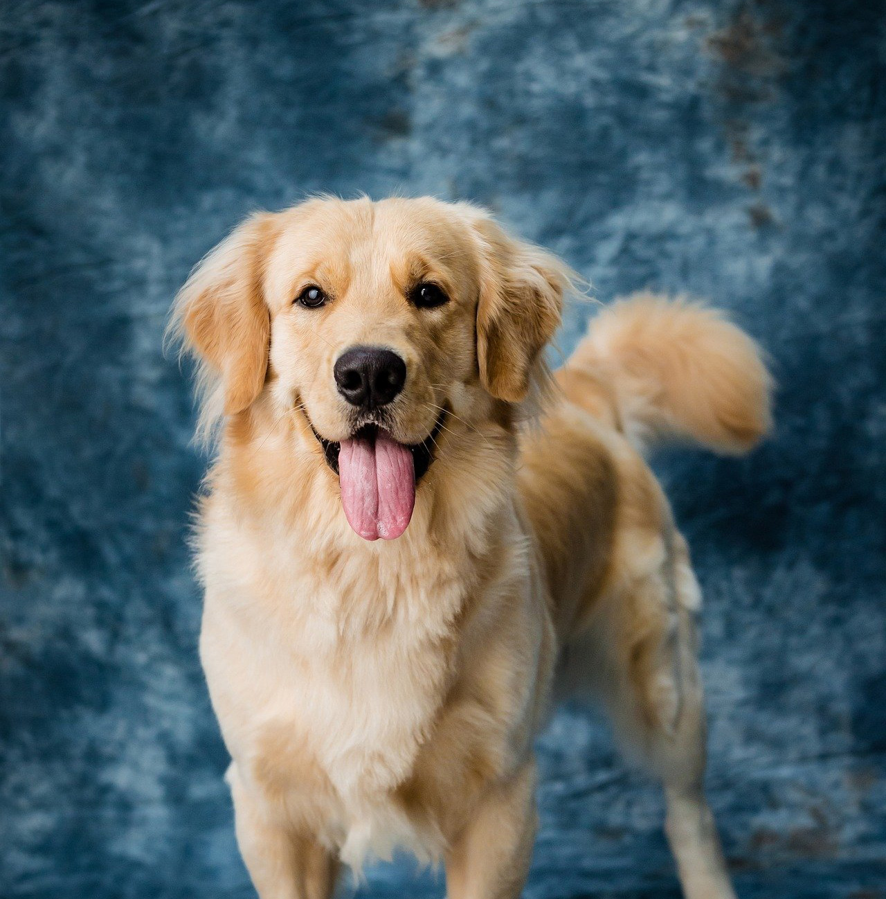

Mongrel Heart
By David Baker
Up the dog bounds to the window, baying like a basset his doleful, tearing sounds from the belly, as if mourning a dead king,
and now he’s howling like a beagle – yips, brays, gagging growls – and scratching the sill paintless, that’s how much he’s missed you, the two of you,
both of you, mother and daughter, my wife and child. All week he’s curled at my feet, warming himself and me watching more TV,
or wandered the lonely rooms, my dog shadow, who like a poodle now hops, amped-up windup maniac yo-yo with matted curls and snot nose
smearing the panes, having heard another car like yours taking its grinding turn down our block, or a school bus, or bird-squawk,
that’s how much he’s missed you, good dog, companion dog, dog-of-all-types, most excellent dog I told you once and for all we should never get.